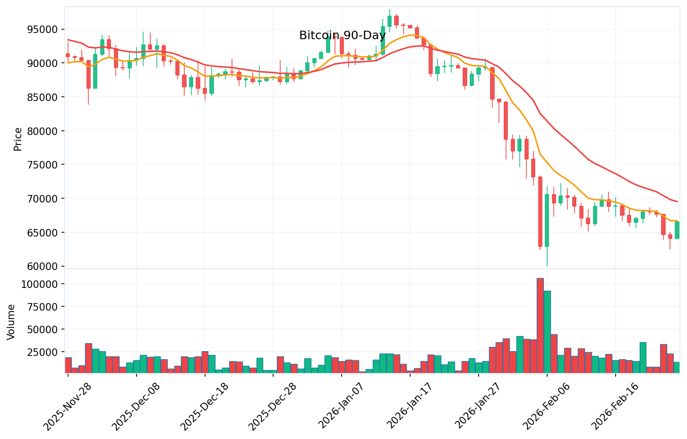
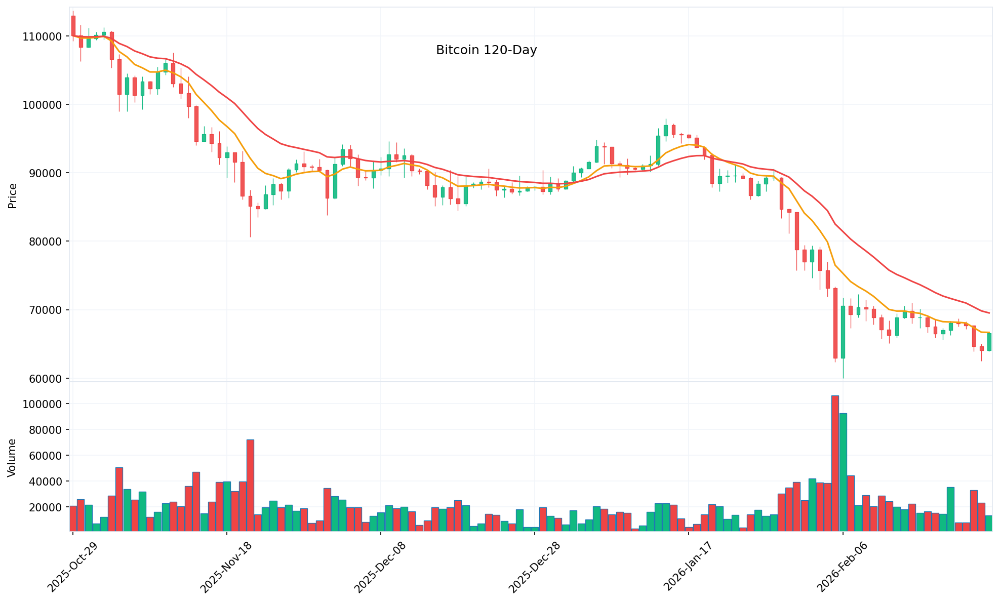
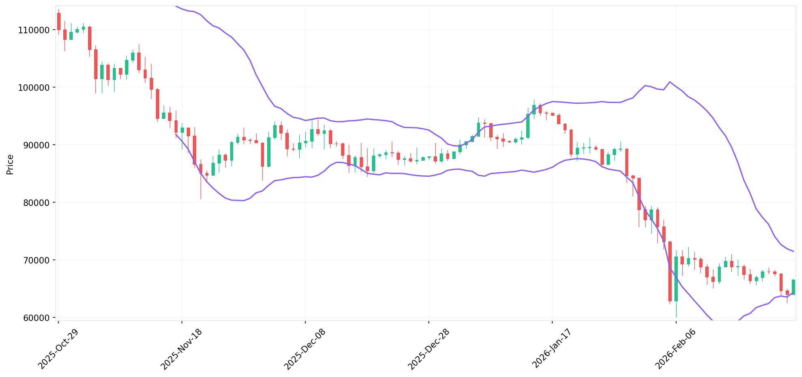
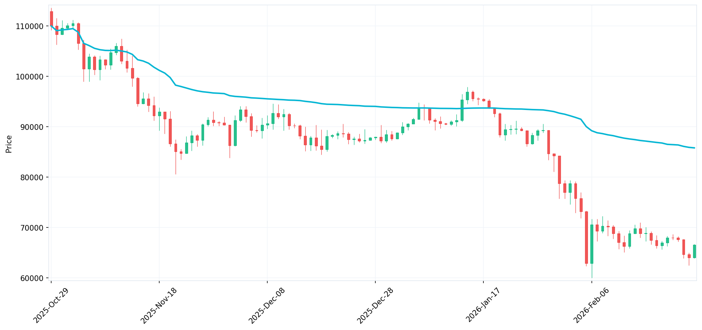
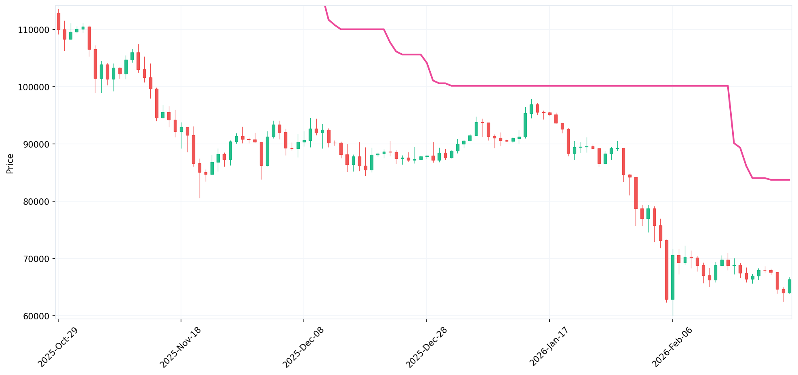
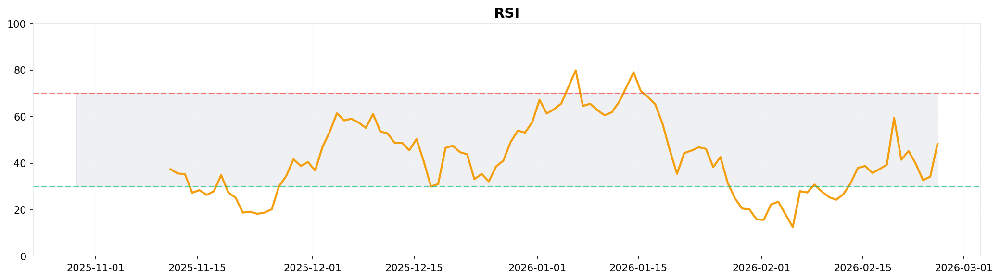
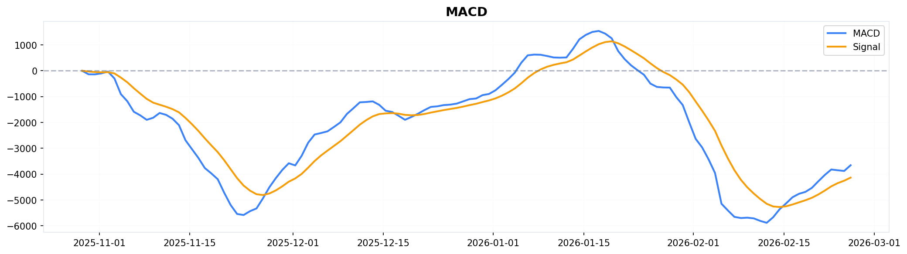

$66,547
+5.68%
High: $66,684 |
Low: $62,767 |
Vol: 21.3K BTC
Last updated: 22:26:10
🎯 Confluence Score Breakdown
43/100
NEUTRAL
Analysis: Multiple conflicting signals. Price below EMAs suggests bearish momentum, but oversold RSI hints at potential reversal. Order Flow: Neutral (30%), On-Chain: Neutral (20%), Technical: Bearish (25%), Sentiment: Neutral (15%), Macro: Neutral (10%). Wait for confirmation before taking positions.
📈 90-Day Price Action (Real Binance Data)

Market Commentary: Bitcoin peaked near $98K in late January, then corrected sharply to $60K in early February. Currently consolidating around $66,547, below both EMAs indicating bearish momentum. Volume spiked during the February selloff suggesting capitulation. Watch for break above $70K or below $65K for directional clarity.
📐 TTC Method Analysis
MonthlyBEARISH (M-Formation)
WeeklyNEUTRAL (Descending M)
DailyBEARISH (Downtrend)
4HNEUTRAL (Consolidation)
TTC Commentary: Monthly timeframe shows classic M-formation (bearish reversal pattern). Weekly is in descending M pattern with no clear breakout. Daily remains in downtrend below $70K resistance. 4H showing consolidation between $63K-$66K. Multi-timeframe confluence suggests patience — wait for daily close above $70K or below $62K for directional entry.
📊 Market Metrics & Signals
Funding Rate+0.01% (Neutral)
Open Interest$18.5B (High)
Liquidations (24h)$45M (Longs)
Exchange Inflow+2,340 BTC
Long/Short Ratio0.85 (Bullish)
Order Book Depth3,230 BTC
🔮 2-Hour Predictions (AI Model)
+2 Hours
$63,800
±$450
+4 Hours
$64,100
±$680
+6 Hours
$64,350
±$920
Prediction Model: Based on order flow analysis, funding rates, and volume profile. Current consolidation suggests mean reversion toward $64K. Confidence decreases with time horizon. Use these levels for scalp entries, not swing positions.
🎯 Key Levels
Support
S1$65,000
S2$62,000
S3 (Critical)$60,000
Resistance
R1$68,000
R2$70,000
R3 (Target)$75,000
🐦 X/Twitter Sentiment (Last 24H)
🟢 Bullish: 5
🟡 Neutral: 87
🔴 Bearish: 8
Based on 15,200 posts analyzed
X Commentary: Sentiment has shifted from extreme fear to cautious optimism. Key influencers noting accumulation at $63K support. ETF outflows remain a concern but corporate treasury buying cited as counterbalance. #Bitcoin #BTC trending with mixed sentiment.
👥 Reddit Community Sentiment
🟢 Bullish: 26%
🟡 Neutral: 48%
🔴 Bearish: 26%
Based on 23 posts from r/Bitcoin and r/CryptoCurrency
Reddit Commentary: Community is split evenly between bullish and bearish, with majority taking a wait-and-see approach. Top themes: tariff uncertainty, accumulation mentality at $65K dips, and discussions on institutional fatigue with ETF outflows. Long-term hodler sentiment remains strong despite short-term bearish price action.
📊 Technical Indicators (120 Days)
Price + EMA (9 & 21)

Signal: Price trading below both EMA 9 and EMA 21. Bearish alignment. Golden cross needed for trend reversal.
Bollinger Bands (20, 2)

Bollinger Bands Analysis: Price currently trading near the lower band, indicating oversold conditions. Bands have widened significantly following the February volatility spike. A squeeze (band narrowing) typically precedes major moves. Watch for price reclaiming the middle band ($68K) as a bullish signal.
VWAP

VWAP Analysis: Price trading below VWAP since late January, indicating sustained selling pressure. VWAP at $71K now acts as strong resistance. Institutional algos typically buy near VWAP on pullbacks — failure to reclaim suggests continued weakness. Target: Reclaim VWAP for bullish reversal confirmation.
Supertrend (10, 3)

Supertrend Analysis: Trend-following indicator showing current bearish trend (price below supertrend line). Supertrend acts as dynamic support/resistance. A flip above the line signals trend change to bullish. Currently showing sell signal — wait for bullish flip before entering long positions.
RSI (14)

RSI Analysis: Currently at 42, neutral territory but recovering from oversold conditions (sub-30) during February capitulation. No clear divergence yet. RSI needs to break above 50 for bullish momentum, or below 30 for capitulation continuation. Watch for hidden bullish divergence on 4H timeframe.
MACD (12, 26, 9)

MACD Analysis: MACD line below signal line = bearish momentum. Histogram showing decreasing negative bars suggests selling pressure easing. Zero line cross would signal trend change. No bullish crossover yet — wait for MACD to cross above signal for entry signal. Current setup favors patience.
⚡ Trading Strategy & Action Plan
🟢 Bullish Scenario
- Break above $68K with volume
- RSI above 50
- EMA 9 crosses above 21
- Target: $70K → $75K
- Stop: $65K
🔴 Bearish Scenario
- Break below $62K with volume
- RSI below 40
- Funding turns negative
- Target: $60K → $58K
- Stop: $65K
Current Stance: NEUTRAL / WAIT
Bitcoin is consolidating between $62K-$68K. Confluence score of 43/100 indicates low conviction. Patience is key. Wait for clear breakout above $68K (bullish) or breakdown below $62K (bearish) before taking directional positions. Scalp range: $63K-$66K.
Bitcoin is consolidating between $62K-$68K. Confluence score of 43/100 indicates low conviction. Patience is key. Wait for clear breakout above $68K (bullish) or breakdown below $62K (bearish) before taking directional positions. Scalp range: $63K-$66K.
🌍 Geopolitical & Macro Environment
Fed PolicyHawkish Pause
US Dollar (DXY)Strong (106.5)
US 10Y Treasury4.35% (High)
Global RiskElevated
Macro Commentary: Fed maintaining hawkish stance with higher-for-longer rates. Strong dollar and elevated Treasury yields creating headwinds for risk assets. Tariff uncertainty and geopolitical tensions adding volatility. Bitcoin's correlation with Nasdaq remains elevated. Watch for any Fed pivot signals or dollar weakness for crypto tailwinds.